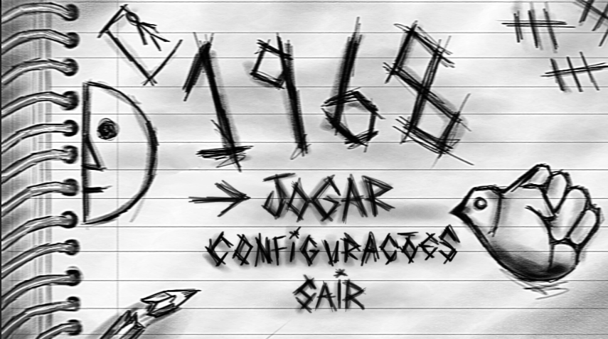

JOGO: "1968".
DESCRIÇÃO:
O jogo "1968" foi o projeto de conclusão de curso (TCC), com o objetivo de colocar em prática tudo aprendido no curso de programação de jogos digitais. Neste jogo você assume o papel de um estudante na época da ditadura militar que ainda não possui conciência sobre o assuto, assim ao andar pela escola realizando minigames relacionados à história do período ditatorial o personagem vai construindo seu ponto de vista sobre o período em questão.
ILUSTRAÇÕES REALIZADAS:
